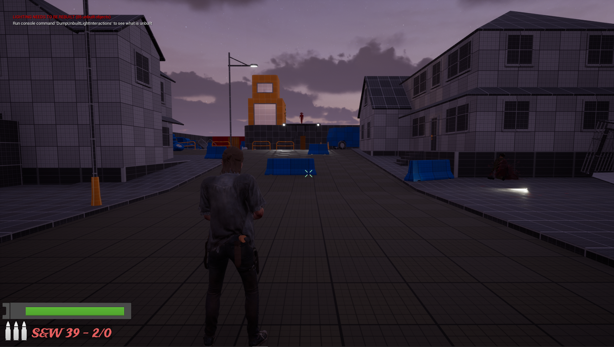
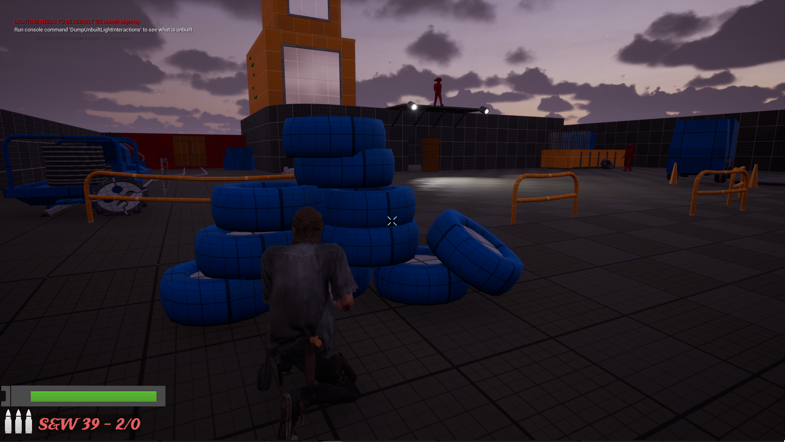
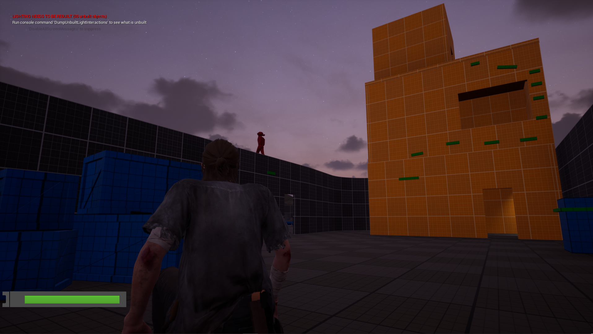
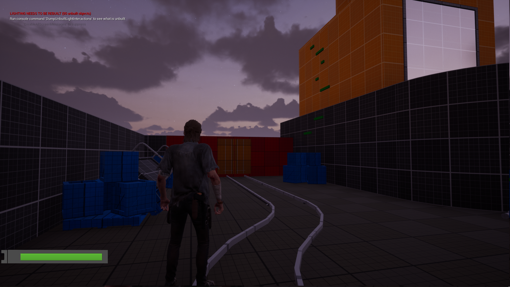
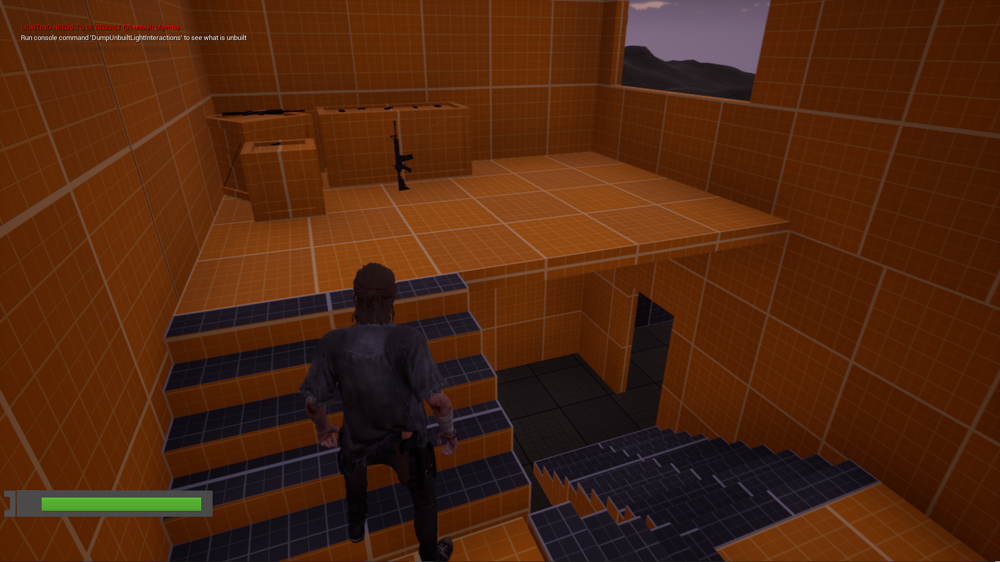
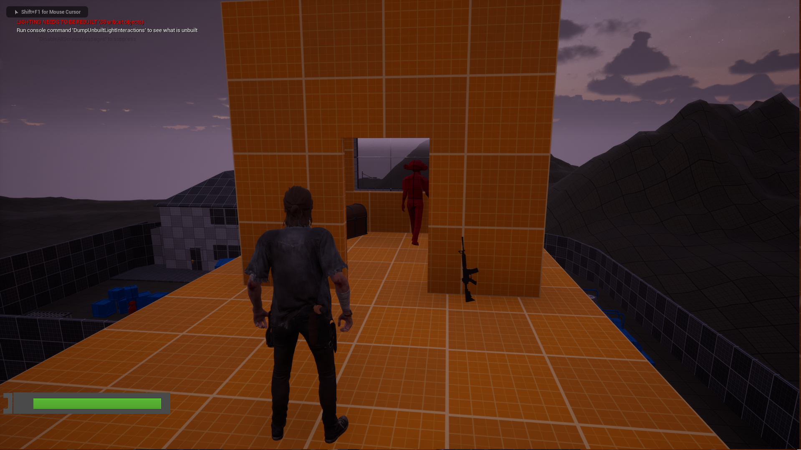

Personal Project
This is a level I submitted in my CGMA level design course.
• Built a blockout level for a single player experience
• Created a color scheme to have consistensy with the objects that are interactable and for cover
• Scripted a dialogues system and game events manager to handle different situations during gameplay.
• Improved enemies AI to have movement patterns and keep the flow of the level.
Tools & resources used:
• Unreal Engine 5
• Maya
• IWALS player controller by Jakob W
Walkthrough
Walkthrough of the level using the different paths available

the focal point is clear in the level letting know to the player where is the objective

Used different colors to define the utility of each object (blue - cover | Orange - Objective | Green - interactable | Red - Enemies )

the player has the choice to start a shooting or use stealth to pass the soldiers

Multiple paths exist to reach the objective of the mission

Key places to rest and lower the tension, also brings some advantages to the player

Final location and objective of the level's mission